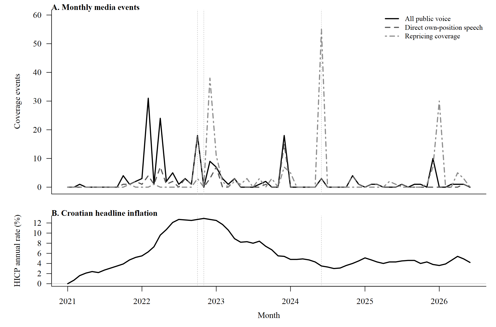
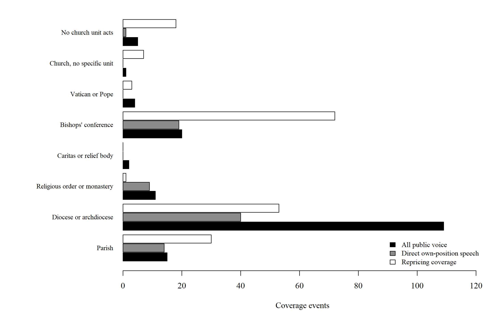

Inflacija, informacije i odgođene promjene cijena
Javni govor, inflacijski šok i vremenski odmak promjena cijena
Istraživanja rigidnosti cijena uglavnom promatraju same cijene. Mnogo je teže utvrditi je li određivač cijene uočio inflacijski šok, ali je prilagodbu ipak odgodio. Ovaj rad koristi datirano medijsko izvještavanje kako bi proučio upravo taj slijed u hrvatskom vjerskom sektoru, za koji ne postoji službena cjenovna serija.
Istraživačko pitanje
Rad razlikuje dva moguća objašnjenja nepromijenjene cijene. U prvom slučaju određivač cijene nije obradio relevantne informacije. U drugom je slučaju upoznat s rastom vlastitih troškova, ali cijenu ne mijenja zbog troška prilagodbe, sporog organizacijskog odlučivanja ili mogućeg otpora korisnika. Medijski zapisi ne otkrivaju privatno razmišljanje, ali pokazuju kada su informacije o troškovima i prihodima postale javno prisutne unutar sektora.
Podaci i metode
Analiza polazi od službenoga korpusa s 413.985 religijski relevantnih objava od siječnja 2021. do lipnja 2026. Jedinstveno pravilo relevantnosti primijenjeno je na oba razdoblja prikupljanja. Kodiranjem je izdvojeno 475 objava koje stvarno povezuju religiju s domaćom inflacijom. Objave su zatim razvrstane prema predmetu ekonomskog sadržaja, vrsti govornika, institucijskoj jedinici i vrsti odgovora. Odgovor može biti javni govor, promjena cijena, dobrotvorna pomoć ili normativno tumačenje tereta inflacije.
Većina kandidata zadržava ranije odluke triju neovisnih kodiranja. Novi korpus izdvaja još 32 kandidata, koji su kodirani u zasebnom dodatku. Razlika u snazi anotacije zadržana je u analitičkim izlazima i navedena među ograničenjima rada.
Medijski korpus koristi se kao registar događaja, a ne kao cjenovni indeks. Analiza zato mjeri datume, vrhunce, sastav izvještavanja i vremenske odmake. Ne procjenjuje razinu pojedine naknade, koeficijent prijenosa inflacije ni strukturnu stopu promjene cijena.
Glavni nalazi
Izravan govor sektora o vlastitim troškovima ili prihodima pojavljuje se u 83 objave i doseže vrhunac u listopadu 2022. Izvještavanje o promjenama cijena doseže vrhunac u lipnju 2024., dvadeset mjeseci poslije. Harmonizirana razina potrošačkih cijena tada je bila 25,7 % viša nego u lipnju 2021.
Četiri imenovana crkvena tijela pojavljuju se i u govoru o vlastitom ekonomskom položaju i u kasnijem izvještavanju o promjeni cijena. U tri slučaja odmak je dulji od godine dana. Relevantne informacije bile su, dakle, javno prisutne prije nego što se izvještavanje o prilagodbi cijena koncentriralo.
Novi korpus daje oprezniju procjenu veze medijske pažnje i inflacije. U razdoblju glavnog šoka korelacija udjela objava o troškovima života i ukupnoga HICP-a iznosi 0,48, dok mjesečne promjene ne pokazuju stabilnu vezu. Glavni argument rada zato počiva na vremenskom slijedu i podudaranju imenovanih tijela, a ne na snažnoj korelaciji pažnje i inflacije.
Nalaz nije dovoljan za razdvajanje ograničenja pravednosti od sporoga organizacijskog odlučivanja. Pokazuje da nepažnja prema vlastitim troškovima nije potpuno objašnjenje opaženog slijeda, ali ne isključuje djelomičnu nepažnju ni troškove prilagodbe.
Vremenski slijed

Slika Slika 1 pokazuje da govor o vlastitim troškovima doseže vrhunac uz vrhunac inflacije, dok je najveća koncentracija izvještavanja o promjenama cijena zabilježena poslije pada inflacije.
Institucijska raspodjela

Slika Slika 2 pokazuje organizacijsku podjelu događaja. Biskupije dominiraju javnim govorom, dok je izvještavanje o promjenama cijena raspodijeljeno između biskupija, biskupske konferencije i župa.
Cijeli rad
Potpuni rukopis dostupan je u tri formata.
Sve tablice, slike i brojčani navodi generirani su iz osvježenih izlaza studije. Opis korpusa i profil izvora dostupni su na stranici Baza podataka.
Status
Radni rukopis Luke Šikića i Petre Palić, pripremljen u okviru projekta DigiKat na Hrvatskom katoličkom sveučilištu. Dio je drugoga izlaznog toka projekta, čiji je popis na stranici Projektni raspored.